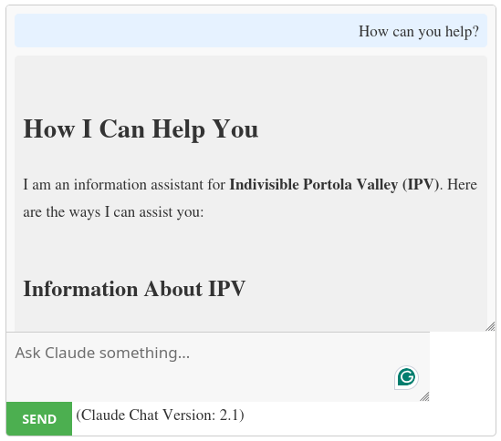
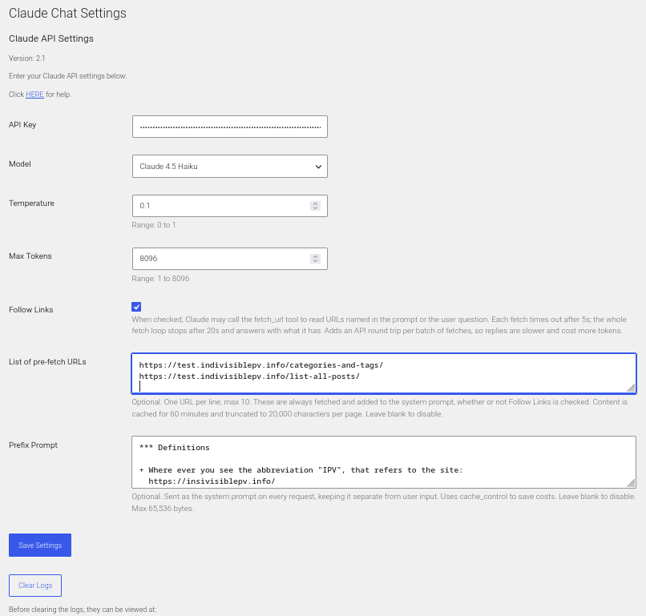

Integrate the Claude AI chat interface into your WordPress website using a simple shortcode.
Claude 3 Haiku: claude-3-haiku-20240307
Claude 3 Sonnet: claude-3-sonnet-20240229
Claude 3 Opus: claude-3-opus-20240229
Claude 3.5 Sonnet: claude-3-5-sonnet-20240620
Easy Integration: Use a shortcode to seamlessly integrate the Claude AI chat interface into your WordPress site.
Admin Settings: Configure API settings directly from the WordPress admin panel.
Customizable Interface: Modify the chat interface appearance and behavior with ease.
Claude API Support: Full support for Claude API parameters such as temperature, max tokens, and more.
AJAX-Based: Smooth, responsive chat experience powered by AJAX.
Source: https://github.com/TurtleEngr/WP-chat-bot-for-claude
pkg/claude-chat-interface.zip
plugin, with the above Install Zip File directions.To display the chat interface on any page or post, use the shortcode:
[claude_chat]
Go to 'Settings' > 'Claude Chat' in the WordPress admin panel to configure the following options:
API Key: Enter your Claude API key.
Model: Select the Claude model you wish to use.
Temperature: Adjust the randomness of responses (value between 0.0 and 1.0).
Max Tokens: Set the maximum number of tokens for the response.
Follow Links: Checkbox. If checked URLs in the prompts will be followed.
List of pre-fetch URLs: One URL per line. Each URL will be read and added to the prompts.
Prefix Prompt: Define a prompt that will be put before the user's prompt.
Save Setting button: Save the current settings.
Clear Logs button: the chat and error logs will be cleared
Links below Clear Logs are links to the log files that can be downloaded.
These internal constants can be changed. The defaults values are shown here. Also, some of these values will be shown in the Claude Chat Settings admin form.
cgClaudeChatFetchTimeOut: 5sec for each URL fetch
cgClaudeChatResponseBudget: 20sec for the whole response
cgClaudeChatPreFetchTtl: 3600 sec (1 hour)
cgClaudeChatMaxPreFetchUrls: 10
Pre-fetch list limits. Content is cached in a transient for this many seconds, keyed by a hash of the URL list.
cgClaudeChatMaxFetchBytes: 256 KB
cgClaudeChatMaxFetchChars: 20 KB
The byte cap protects PHP memory; the character cap protects the token budget — a single large page can otherwise crowd out the Prefix Prompt and the user's actual question. */
cgClaudeChatMaxToolRounds: 5
Max number of send/toolresult round trips. The response budget is the primary stop condition; this is a backstop so a model that keeps asking for cheap, fast fetches cannot loop indefinitely inside the budget.
cgClaudeChatMaxResponseBytes: 4 MB
cgClaudeChatMaxLogDumpChars: 4 KB
cgClaudeChatMaxPrefixPrompt: 65 KB
Styling: Customize the chat interface by editing the
css/claude-chat.css file.
JavaScript: Add or modify functionality by editing the
js/claude-chat.js file.
Registered in fClaudeChatRegisterSettings() with sanitizetextareafield as its sanitize callback (multi-line safe).
Added at the bottom of the settings form via fClaudeChatSettingsInit(). It uses fClaudeChatTextareaFieldCallback() that renders a
<textarea> (6 rows × 60 cols) with a description explaining the
caching behaviour. Leaving it blank disables the feature entirely.
prefix + cachecontrol - fClaudeChatApiRequest()
When a prefix is saved, the user message is sent as a two-block content array instead of a plain string.
The cachecontrol: ephemeral block tells Anthropic's API to cache the prefix across repeated requests — reducing latency and token cost for long system-style prompts. The anthropic-beta: prompt-caching-2024-07-31 header is added automatically to enable this feature.
response cleanup - claude_chat_strip_prefix()
After the API reply is received, this helper checks (case-insensitively) whether the response begins with the prefix text and strips it if so. Claude won't normally echo the prefix back, but this guards against edge cases where it does.
claude.php: Register 3
new options (addon_prompt_enabled,
addonpromptlabel=,=addonprompttext=), add a single
settings field with a custom callback rendering all three controls, update
the shortcode to conditionally render the user-form checkbox, and pass the
addon prompt text to JS via=wplocalizescript`.
js/claude-chat.js: Before
sending, check if the addon checkbox exists and is checked — if so, append
the addon prompt text (from the localized data) to the message.
css/claude-chat.css: Add
a small style for the addon checkbox row in the user form.
Added newer models to cgClaudeChatModels
(Claude 3.5 Haiku, Claude 3.5 Sonnet Oct 2024, Claude 3.7 Sonnet).
Fixed temperature to only be sent when it's actually set (previously 0 would be silently dropped).
Bumped Max Tokens ceiling to 8096 to match modern model limits.
js/claude-chat.js — The JavaScript only handles the chat UI: capturing the user's input, sending it to admin-ajax.php via AJAX, and displaying the response. None of that flow changed. The prefix prompt is added (and stripped) entirely on the PHP/server side, invisibly to the JS layer.
css/claude-chat.css — The new Prefix Prompt field in the admin settings form uses standard WordPress admin classes (large-text, code, description) that are already styled by WordPress core. No custom CSS is needed.
WordPress: Version 5.0 or higher. (tested with 6.9.4)
PHP: Version 7.0 or higher. (tested with 8.3.30)
Claude API Key: A valid Claude API key is required.


API Key - Put your Claude API key here
Model - Pick the model you want
Temperature - Range: 0 to 1
Max Tokens - Range: 1 to 8096
Follow Links - checkbox
When checked, Claude may call the fetchurl tool to read URLs named in the prompt or the user question. Each fetch times out after 5s; the whole fetch loop stops after 20s and answers with what it has. Adds an API round trip per batch of fetches, so replies are slower and cost more tokens.
List of pre-fetch URLs - textbox
Optional. One URL per line, max 10. These are always fetched and added to the system prompt, whether or not Follow Links is checked. Content is cached for 60 minutes and truncated to 20,000 characters per page. Leave blank to disable.
Prefix Prompt - textbox
Optional. Sent as the system prompt on every request, keeping it separate from user input. Uses cachecontrol to save costs. Leave blank to disable. Max 65,536 bytes.
Save Settings - Save any changes.
Clear Logs - This button will clear the user and error logs.
Before clearing the logs, they can be viewed at:
https://WP-HOME/wp-content/uploads/claude/claude_log.org
https://WP-HOME/wp-content/uploads/claude/claude.log
For support, feature requests, or to report issues, please open an issue on the GitHub repository.
This plugin is licensed under the DBAD License
Volkan Sah
The repository [(VolkanSah/WP-Claude-Interface)][https://github.com/VolkanSah/WP-Claude-Interface] is archived. Most people just want a ready-made product and don't want to learn from boilerplates — that's fine, but it's not what this was built for.
If you need a real AI client for WordPress with full power behind it, check out WP AI Hub — a thin client for Multi-LLM API Gateway.
Why? Because with one hub on HuggingFace Spaces you can pull Claude via API into WordPress, route DeepSeek through OpenRouter, run Flux or Veo 3 for image/video generation — all at the same time, all through one connection. Not 20 different plugins to maintain, no annoying premium limits per plugin, no bloat. Just one hub, all your models, one WordPress client.
Deploy your own hub, connect it via WP AI Hub — and actually own your AI stack.